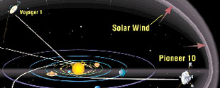

Space Colonization
Space Colonization
How will Humans make the Journey ?
The possibilities for how we as humans will make the interstellar journey depends on several factors and assumptions. Key driving factors in the design of our accomodations include the speed and distance we plan to travel (see Where and How). We will also assume for the remainder of this discussion that humans will not become extinct and that the drive to survive and explore will not be eliminated from of our nature in the near term.
Suspended Animation
Although a favorite technique in science fiction, today's technology does not provide for the realistic possibility of suspending through cryonics or other means with a chance of resuscitation. There are many research efforts aimed at making this a possibility. Most of these efforts are focused on the terminally ill and promote the promise of revival at a time when the disease can be cured. Whatever the impetus for invention, space-farers may benefit from this technology if and when it becomes practical.
AI/Machine Enhablement
This will be our first method of interstellar human representation. In fact, it has already begun in some respects (Voyager 1 has left the solar system). Small ships can equipped with sensory arrays and probes that will relay data back to earth or some grand central station, intended to aid us in our decision on where to send living, breathing humans. In the future, humans may also make the journey as machines. Downloading/uploading human conscious into computers is a favorite them of science fiction authors and is being considered as a possible goal of AI.

Incubatorial Craft
Commonly known as Seed Ships. These are one step beyond the AI/Machine enabled craft in that they are unmanned vesssels which host self-contained laboratories for conceiving, incubating, birthing, and rearing humans perhaps thousands of light years from sol. The theory is that AI would spend the tedious eons traveling from system to system searching for planets able to support human life (perhaps with genetic alterations required to live in the new found biosphere), and would then launch the planet-bound habitat capable of producing and supporting the genesis of a new human society. Such a ship would carry all of the knowledge and tools necessary to establish an advanced civilization. Significant genetic alterations required by each new environment may be considered by some as constituting a new race. Social interaction between the range of possible human forms is an interesting area of speculation that we would like to explore through essays and conjecture submittted by our readers.
Generational Ships
We favor the generational ship approach. The name is self explanatory. A ship that supports successive gerations of humans on a journey between the stars. Our reason for supporting this method of tarvel is simply this: It's not the destination that is important, it's the journey. The idea that life or the business of living has to be associated with a nearby star or planet is, well, terrestrial . Aside from the fact that star systems may need to be visited from time-to-time for the collection of resources and may be the place to meet other species, interstellar distances are a perfectly fine place to raise a family...
Faster Than Light Travel
Although not a reality yet, fans of Star Trek and any number of otehr science fiction shows know well the concept of a "Warp Drive", or a propulsion system that allows faster than light travel. This could make interstellar travel no more strenuous than a trip here in the solar system. Of course, as we know from the recent shuttle problems, the most dangerous prt of any flight may be earth to orbiting docking station or ship. Assuming for the moment however that the privatization of space yeilds a more effective and efficient means of getting to free space, there are a number of theoretical Faster-Than-Light (FTL) systems. These include:
• Worm Hole transportation - Although Special Relativity forbids objects to move faster than light within spacetime, it is known that spacetime itself can be warped and distorted. It takes an enormous amount of matter or energy to create such distortions, but distortions are possible, theoretically. To use an analogy: even if there were a speed limit to how fast a pencil could move across a piece of paper, the motion or changes to the paper is a separate issue. In the case of the wormhole, a shortcut is made by warping space (folding the paper) to connect two points that used to be separated. These theories are too new to have either been discounted or proven viable. And, yes, wormholes do invite the old time travel paradox problems again.
• Alcubierres "Warp Drive" - The principle of this theoretical drive is that we could epand space-time behind the ship and contract space time in front of the ship to beat the limitations on our ability to move through space. For example you might only be able to travel 90 KPH on a highway. But if you move the highway in the direction you want to go, you have essentially doubled your speed, relative to your destination.
• Negative mass propulsion - It has been shown that is theoretically possible to create a continuously propulsive effect by the juxtaposition of negative and positive mass and that such a scheme does not violate conservation of momentum or energy. A crucial assumption to the success of this concept is that negative mass has negative inertia. Their combined interactions result in a sustained acceleration of both masses in the same direction. This concept dates back to at least 1957 with an analysis of the properties of hypothetical negative mass by Bondi, and has been revisited in the context of propulsion by Winterberg and Forward in the 1980s. Regarding the physics of negative mass, it is not known whether negative mass exists or if it is even theoretically allowed, but methods have been suggested to search for evidence of negative mass in the context of searching for astronomical evidence of wormholes.
• Milliss hypothetical "Space Drives" - A "space drive" can be defined as an idealized form of propulsion where the fundamental properties of matter and spacetime
are used to create propulsive forces anywhere in space without having to carry
and expel a reaction mass. Such an achievement would revolutionize space travel
as it would circumvent the need for propellant. A variety of hypothetical space
drives were created and analyzed by Millis to identify the specific problems
that have to be solved to make such schemes plausible.
Please note that these concepts are purely hypothetical constructs aimed to illustrate the remaining challenges. Before any of these space drives can become reality, a method must be discovered where a vehicle can create and control an external asymmetric force on itself without expelling a reaction mass and the method must satisfy conservation laws in the process.
^ Top ^